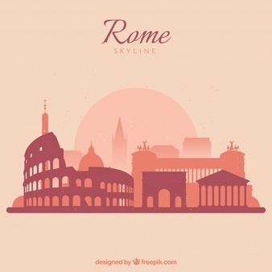
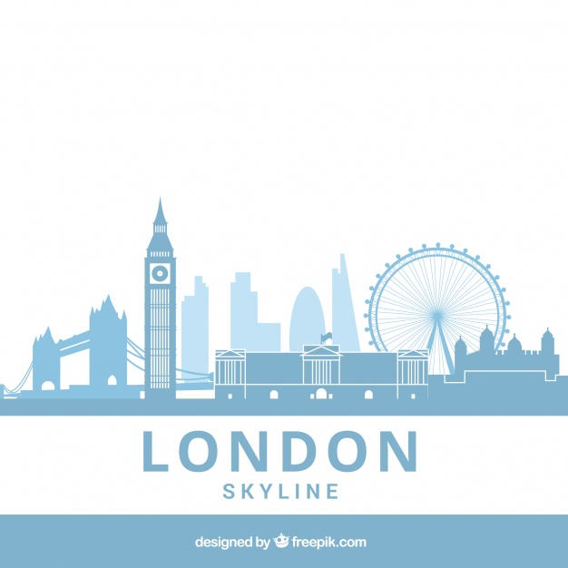
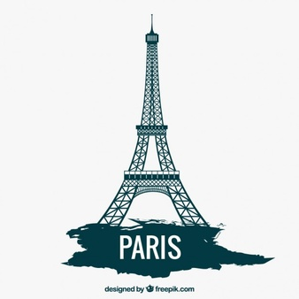

Destinasi Wisata Terbaik!
Destinasi wisata dari berbagai daerah di dunia yang telah dilabeli tempat wisata terbaik oleh berbagai wisatawan mancanegara .
Lihat Daftar >Destinasi Wisata Favorit
Roma Italia
Pesona Kota Roma yang kaya akan warisan sejarah merupakan kunjungan wajib bagi wisatawan yang hendak menyusuri sejarah, arsitektur, budaya, dan seni.
London Inggris
Pesona Kota London yang kaya akan warisan sejarah merupakan kunjungan wajib bagi wisatawan yang hendak menyusuri sejarah, arsitektur, budaya, dan seni.
Paris Prancis
Pesona Kota Paris yang kaya akan warisan sejarah merupakan kunjungan wajib bagi wisatawan yang hendak menyusuri sejarah, arsitektur, budaya, dan seni.